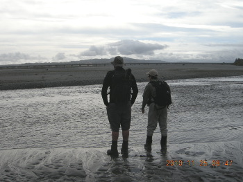
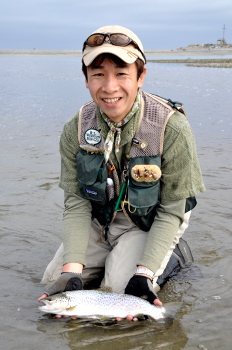

釣行日誌 ＮＺ編 「翡翠、黄金、そして銀塊」
河口にて
2010/11/25(THU)-1
今朝は６時に起きた。今日はホキティカ近郊で釣るので、昨日、一昨日のような長距離ドライブは無いので、少しのんびりしてコテッジの回りを散歩する。よく手入れされた花壇に、色とりどりの花が咲いている。花の名前はよく知らないが、スミレだけはわかった。コテッジのオーナーの花に対する愛情がよくわかる花壇である。
部屋に戻り、準備してくれてある朝食の材料を出してきて、朝ご飯とする。ちょっと昨日のドライブの疲れが残っているような気もするが、今日も張り切って腹ごしらえをした。そうこうしているうちにディーン君がやってきて、本日の作戦会議をする。ブリントさんと電話で話したところ、朝一で、ホキティカ川の河口に行って、シーラン・ブラウンを狙うこととなった。いそいそと支度をして、車に乗り込み、河口に向かう。ステートハイウェイの橋を渡って、右に曲がり、砂利道を通って、いくつかのゲートを抜け、ようやく左岸側の河原へ出た。時刻は午前８時過ぎである。
車を停め、身支度を整え、河原に出るとさすがに大河の河口だけあって、穏やかな水面が初夏の空の元、茫漠と広がっている。川の流れは単調で、どこがポイントなのかさっぱり分からないが、ディーン君の指示のもと、鰐部さんと二人、ストリーマーをキャストしていく。僕がこの時選んだのは、降海型ブラウンに効果があるとされているグレイ・ゴーストである。白っぽいボディが、ホワイトベイトを連想させて鱒の食欲を刺激するのであろう。今日のロッドはキルウェルのプレゼンテーション８番、ラインはタイプ２のシンキングである。この竿なら大物が来ても大丈夫。あとはこのだだっ広い水面の、どこに鱒が居るか？だけである。

今日はあいにくの曇天で、鱒の姿を見つけにくいので、それらしいポイントを狙ってのブラインドフィッシングである。川底はすべて砂地で、変化に乏しいのだが、わずかな水面のよじれや淀みを狙ってキャストする。ストリーマーが着水後、少しだけ間をとってから、スイッ、スイッとリトリーブしてくる。逃げ惑うホワイトベイトを演出するのだ。
対岸の小さな流れ込みを狙っていた鰐部さんが、少し動きを見せた。何か反応があったらしい。気になって、しばらく様子を見ていると、いきなり鰐部さんのロッドが大きくしなった。
「ストライク！」
鱒は下流へ走る。それほど大きくは無いようだ。余裕を持って鰐部さんが魚をいなしている。ロッドのバット部に手を添えて、降海型ブラウンの強烈な引きに耐える。魚体はそれほど大きくは無いが、海で大きくなった鱒は、力強いファイトを見せる。しばらくファイトをすると、ディーン君はランディングネットを持って、早くも取り込みの態勢である。川底は平坦な砂地で、障害物も無いから安心して見ていられる。寄せてきた鱒に、ディーン君のネットが近づき、一気にすくい上げた。
「イエス！ シーラン！」
「グレート！」
ネットの中で暴れる魚体は、ブラウンというよりも、シルバーという方がふさわしい、銀ピカの鱒であった。ディーン君が、鱒の口からストリーマーを外す。鰐部さんも白っぽいストリーマーを使っていたようだ。
「とても強い魚だったなぁ」
「ええ、そうですね」
二人のやりとりを聞きつつ、ビデオの撮影をする。ストライクの瞬間を撮れなかったのが惜しかった。ディーン君が鰐部さんのカメラを受取り、記念撮影の準備をする。鰐部さん、会心の笑顔が撮れた。

実は、今回の釣行で、鰐部さんは降海型ブラウンに再び挑戦することをとても楽しみにしていたのだ。最初の予定では、河口部での釣りは予定に無く、鰐部さんとの釣行を終えた後に、ブリントさん宅に居候して、鰐部さんが帰った後も釣り歩く僕の予定に、降海型ブラウンを狙うことが入っていたので、それを知った鰐部さんは、とてもうらやましがっていたのだ。鰐部さんが待望の１尾を釣ったことで、僕もとてもうれしくなった。
鰐部さんが１尾釣り上げたことで、ぼくにも気合いが入り、めぼしいポイントを釣り下がっていったのだが、それ以来アタリも無く、とうとう海まで来てしまった。波は静かだったので、水中の様子もなんとか見える具合だった。はるか沖の方に、魚影があるらしく、ディーン君の指示の元、ロングキャストをしてみたが、僕の射程をはるかに超えていたので残念ながら釣ることはできなかった。
そうしてこの朝の河口部の釣りは終わりとなり、僕たち三人は、ホキティカの高台にあるブリントさんの家に行くこととなった。
釣行日誌ＮＺ編 目次へ
サイトマップ
ホームへ
お問い合わせ